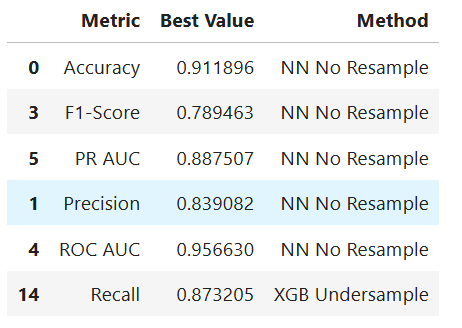
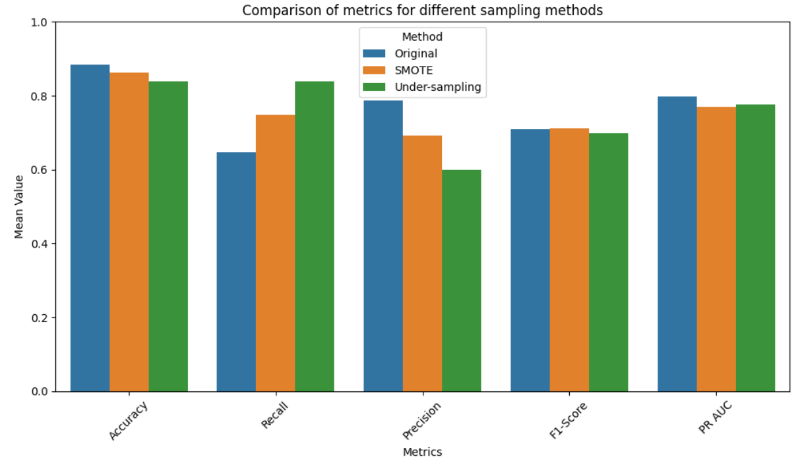

03 / CLASSIFICATION / WEATHER
Machine Learning for Rain Prediction
A classification project for predicting next-day rain, with a focus on model comparison, imbalanced data, resampling strategies, and the precision–recall trade-off.
Overview
The goal of the project was to predict whether it would
rain the following day
from historical weather observations in the public
weatherAUS
dataset. Because rainy days represent the minority class, the project was not simply about maximizing accuracy: the evaluation had to account for the trade-off between correctly identifying rain and avoiding unnecessary false alarms.
I compared different model families and sampling strategies, including the original class distribution, SMOTE , and under-sampling , and evaluated the full pipelines using metrics better suited to imbalanced classification.
Approach
Prepare the weather data
Explore the dataset, clean and preprocess the variables, and create a consistent training pipeline for comparing multiple classifiers.
Handle class imbalance explicitly
Compare the original data distribution with SMOTE and under-sampling to understand how each strategy changes the model's behavior on the minority rain class.
Compare model families
Evaluate neural-network and boosting-based approaches rather than assuming that one algorithm or one sampling strategy would dominate across every metric.
Evaluate beyond accuracy
Use precision, recall, F1-score, ROC AUC, and PR AUC to judge the quality of the classifier from different perspectives.
Best overall results
The Neural Network without resampling achieved the strongest overall performance across most of the comparison metrics.
The same configuration also reached precision = 0.839. The highest recall, 0.873, was instead obtained by XGBoost with under-sampling.

Model evaluation
The diagnostic plots provide a more complete picture than a single score. The ROC curve shows strong discrimination between the two classes, while the precision–recall curve is particularly useful because the positive rain class is imbalanced. The confusion matrix makes the trade-off between false positives and false negatives directly visible.

What resampling changes
The sampling experiment shows why class balancing is not automatically an improvement. Under-sampling increases recall substantially, which is useful when missing a rainy day is especially costly, but it also reduces precision and overall accuracy. SMOTE sits between the original distribution and under-sampling on several metrics.

Final conclusion
The experiments show that there is no universally best sampling strategy : the right choice depends on what type of error matters most. In this project, the Neural Network trained on the original, non-resampled dataset produced the best overall balance, achieving the top accuracy, F1-score, precision, PR AUC, and ROC AUC among the tested configurations.
However, XGBoost with under-sampling achieved the highest recall. This makes it a meaningful alternative when the priority is to identify as many rainy days as possible, even at the cost of more false positives.
The main takeaway is that handling imbalance is not simply about forcing the classes to be balanced. Resampling changes the classifier's decision trade-off, so model selection should be driven by the metric that best represents the real objective of the prediction problem.